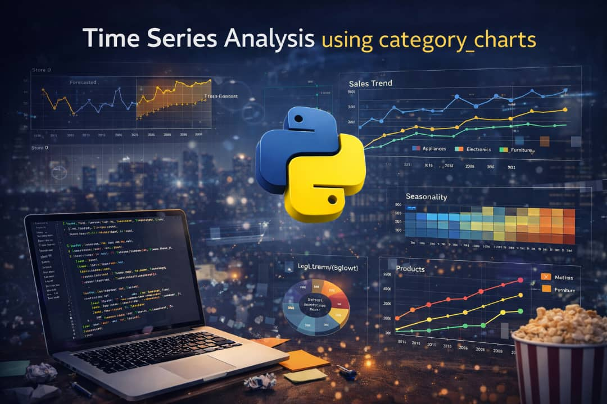
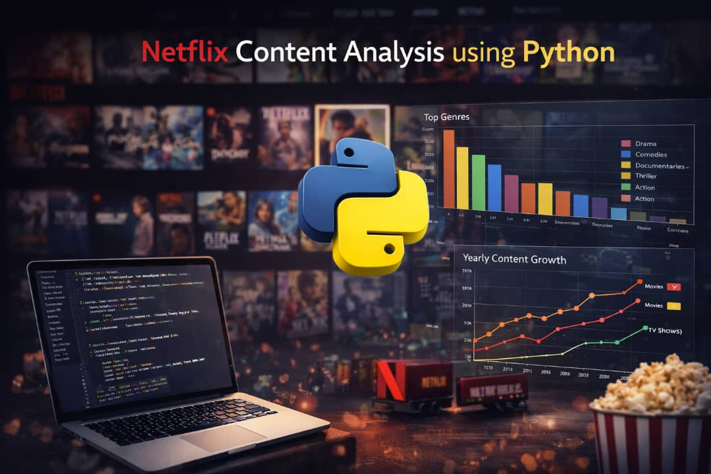
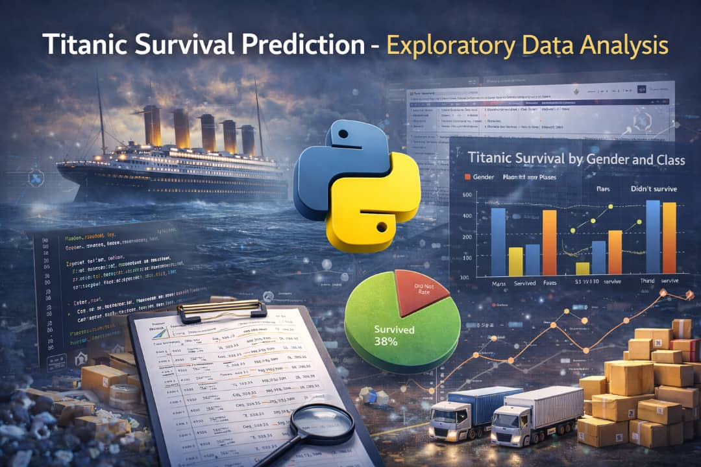
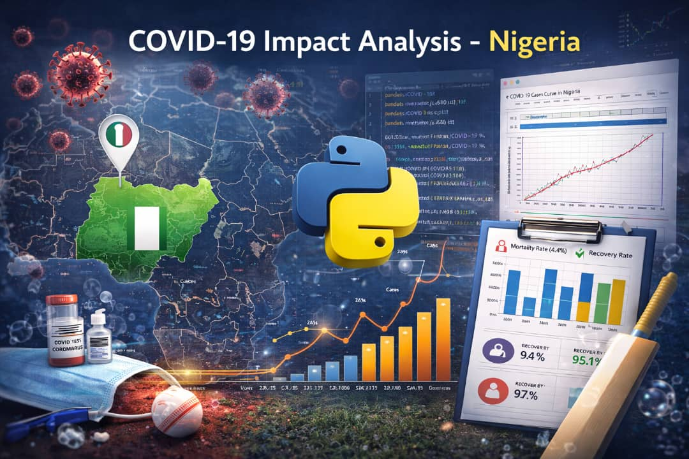
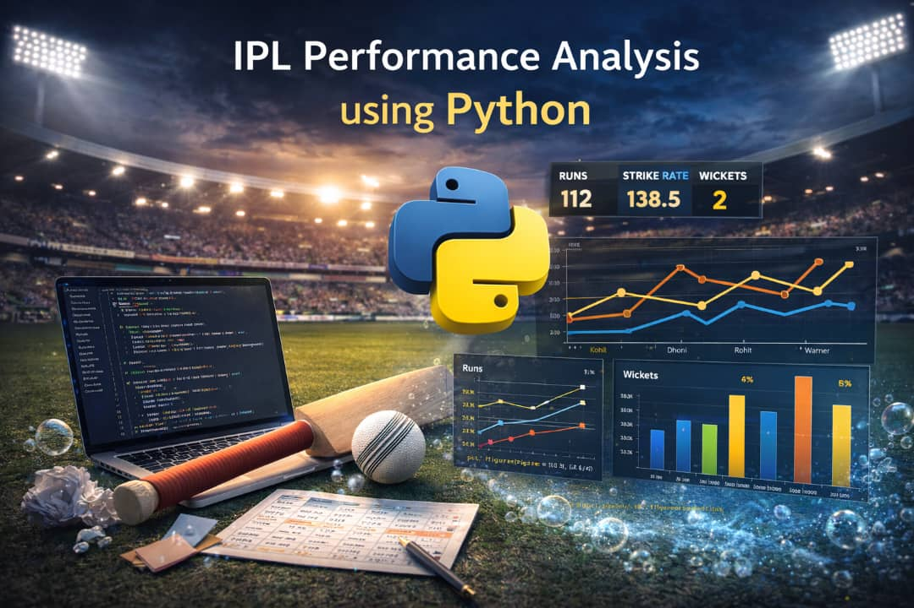
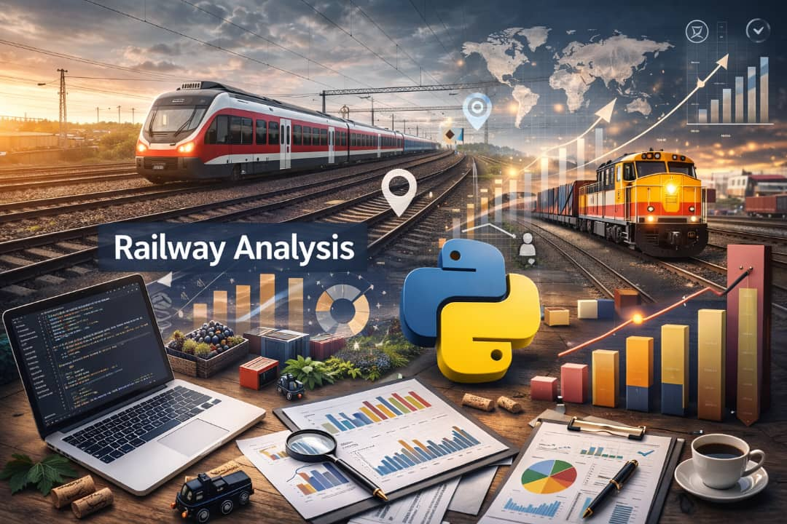

Data Cleaning Utility
This project focuses on cleaning a messy dataset by handling missing values, fixing data types, removing duplicates, and exporting a clean dataset for analysis.

Time Series Categorical Charts
In this notebook, I explore how sales change over time using line charts and compare sales performance across categories using bar and pie charts. The project also focuses on selecting appropriate chart types, formatting labels and axes, and summarizing insights derived from the visualizations. These analyses help in understanding trends, category performance, and overall sales distribution.

Netflix / Media Dataset: Exploratory Data Analysis (EDA)
This project demonstrates an exploratory data analysis (EDA) of a Netflix/media dataset. The analysis focuses on understanding content distribution, trends over time, genre popularity, runtime patterns, and relationships between key variables using statistical analysis and visualizations. The project demonstrates data cleaning, transformation, and visualization techniques commonly used in real-world data analytics workflows.

Titanic Dataset Exploratory Data Analysis (EDA)
Exploratory Data Analysis (EDA) of the Titanic dataset to understand survival patterns. Analysis includes survival by gender, passenger class, age groups, body recovered, lifeboat access, and embarkation port with visualizations and summary insights.

🇳🇬 Nigeria COVID-19 Data Analysis
Visualizing COVID-19 trends in Nigeria: daily & weekly cases, peaks, and regional reproduction rates.

Retail-supply-chain-analysis
End-to-end retail supply chain analysis using Python to evaluate revenue performance, profitability, supplier efficiency, and regional trends.

IPL Performance Analysis (2008–2020)
Analyze IPL match and player data to uncover team dominance, player impact, venue trends, and match competitiveness. Includes KPIs, season-wise insights, and strategic recommendations for franchises, sponsors, and league organizers.

Railway Ticket Sales & Operational Performance Analysis
This project analyzes railway ticket sales data to evaluate revenue performance, passenger behavior, operational reliability, and refund impact.
